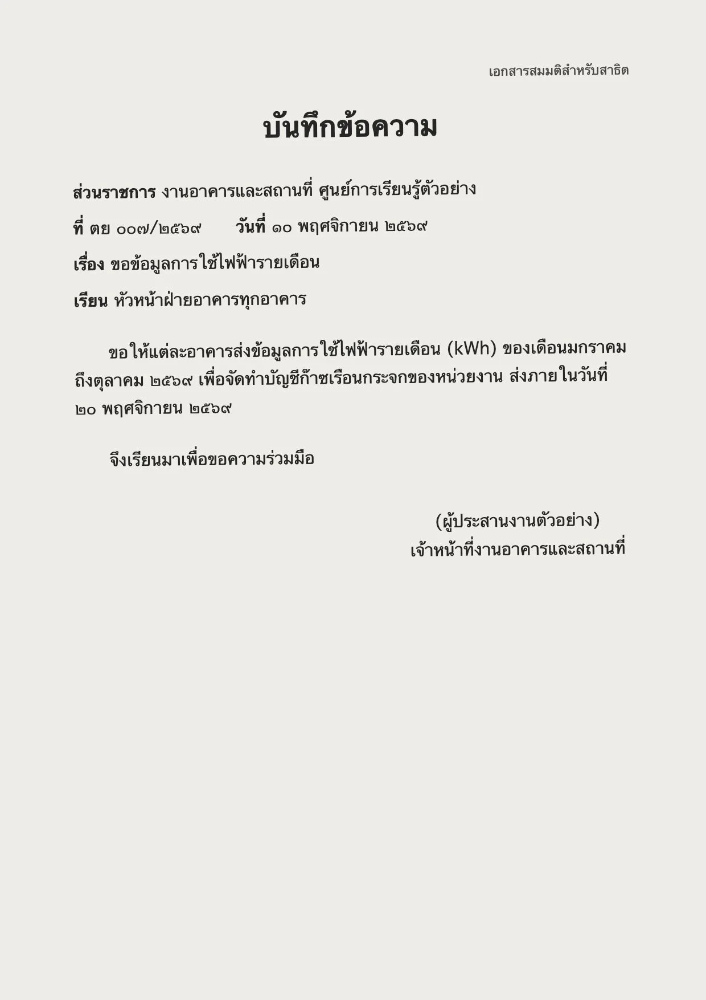
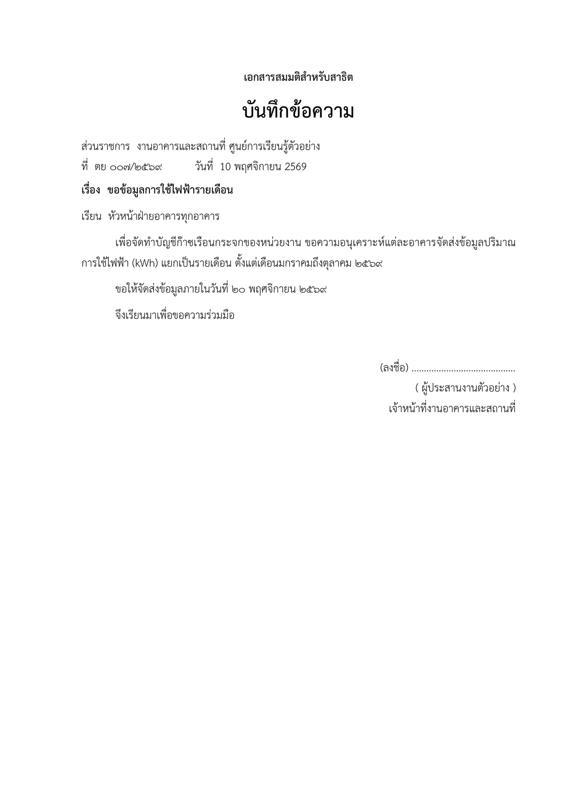
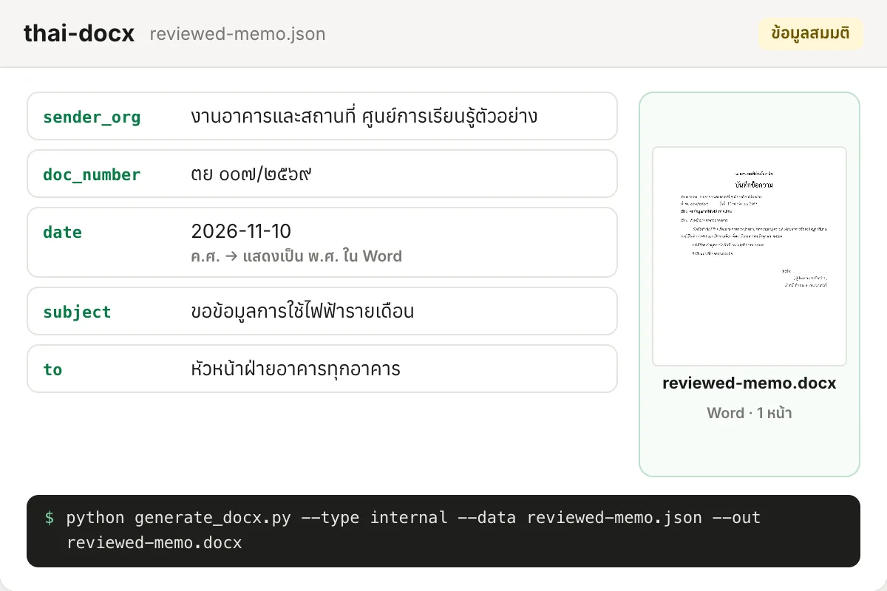

คู่มือจากการทดลอง
ใช้ AI ช่วยตรวจแก้
เอกสารราชการไทย
เปลี่ยนบันทึกข้อความสแกนเป็นร่าง Word พร้อมวิธีตรวจเทียบต้นฉบับ
- Typhoon OCR V2
- AI ช่วยปรับสำนวน
- thai-docx


คำว่า “ข้อมูลค่าไฟ” อาจหมายถึงยอดเงินเป็นบาทหรือปริมาณไฟฟ้าเป็น kWh สำหรับบัญชีก๊าซเรือนกระจก ผมต้องการปริมาณการใช้ไฟฟ้า ผมจึงใช้บันทึกข้อความสมมติหนึ่งหน้าเพื่อทดลองว่า AI ช่วยถอดข้อความและปรับสำนวนได้อย่างไร โดยให้ต้นฉบับเป็นหลักในการตรวจข้อเท็จจริง
01–03ภาพรวมขั้นตอน
จากภาพสแกนถึงร่าง Word ใน 3 ขั้น

-
อ่านด้วย OCR แล้วตรวจกับภาพ
Typhoon OCR V2 ถอดข้อความทีละบรรทัดพร้อมพิกัด ผมเทียบกับภาพทุกบรรทัด และแก้คำที่อ่านผิด
-
ให้ AI เสนอสำนวน แล้วเลือกเอง
ใช้ข้อเสนอที่คงความหมายเดิม และไม่ใช้ข้อเสนอที่อาจทำให้ได้ยอดเงินบาทกลับมาแทน kWh
-
สร้างร่าง Word จากช่องที่ตรวจแล้ว
ใส่ข้อมูลที่ตรวจแล้วลง JSON แล้วรัน thai-docx ได้ไฟล์ .docx ไว้ตรวจทานต่อ
ร่าง Word หนึ่งหน้าที่ทุกช่องตรวจเทียบกับภาพสแกนแล้ว พร้อมผล OCR และ JSON ไว้ตรวจย้อนหลัง
ขั้นตอนแบบละเอียด
1. เก็บคำที่ OCR อ่านได้
ผมใช้ Typhoon OCR V2 รุ่น 0.8B อ่านภาพจาก PDF แล้วเก็บข้อความดิบไว้เทียบกับภาพ สังเกตทั้งคำที่อ่านได้และตำแหน่งที่อ่านมา เวลาแก้คำหรือเลข ผมจึงย้อนดูแถวเดิมได้
ข้อความจาก Typhoon OCR V2
บันทึกช้อความ
บันทึกข้อความ แก้หลังตรวจกับภาพสแกน
ดูผล OCR พร้อมพิกัดข้อความOCR อ่านหัวเอกสารว่า “บันทึกช้อความ” ผมตรวจภาพแล้วแก้เป็น “บันทึกข้อความ” จากนั้นตรวจเลขที่หนังสือ วันที่ และหน่วยแยกอีกครั้ง ในฉบับนี้ช่วงข้อมูลคือมกราคมถึงตุลาคม 2569 ส่วนกำหนดส่งคือ 20 พฤศจิกายน 2569
2. ให้ AI เสนอแก้สำนวน แล้วตรวจความหมาย
ให้ AI แสดงข้อความเดิมคู่กับข้อความที่เสนอแก้ พร้อมระบุช่องที่อ่านไม่ชัด วิธีนี้ช่วยให้ตรวจเฉพาะสิ่งที่เปลี่ยนได้ โดยยังเห็นคำเดิมจากต้นฉบับ
ปรับสำนวนให้เหมาะกับบันทึกข้อความ แสดงข้อความเดิม ข้อความที่เสนอ และเหตุผล คงผู้รับ หน่วย ช่วงเดือน และกำหนดส่งตามต้นฉบับ ถ้าข้อมูลคลุมเครือให้ระบุว่าต้องตรวจ
- ข้อความเดิม
ขอให้แต่ละอาคารส่งข้อมูลการใช้ไฟฟ้ารายเดือน(kWh)- ข้อความที่เลือกใช้
- ขอความอนุเคราะห์แต่ละอาคารจัดส่งข้อมูลปริมาณการใช้ไฟฟ้า (kWh) แยกเป็นรายเดือน
ถ้า AI เสนอใช้คำว่า “ส่งยอดค่าไฟรายเดือน” ให้ปฏิเสธ เพราะคนอ่านอาจส่งยอดเงินบาทแทน kWh ผมตรวจชื่อผู้รับ เลขที่หนังสือ วันที่ และกำหนดส่งซ้ำจากภาพก่อนส่งออก
3. สร้างร่าง Word จากข้อมูลที่ตรวจแล้ว
ผมแยกส่วนราชการ เลขที่ วันที่ เรื่อง ผู้รับ และเนื้อหาเป็นช่องใน JSON แล้วส่งให้สคริปต์ thai-docx สร้างร่าง Word สคริปต์ใช้วันที่ปัจจุบันเมื่อช่องวันที่ว่าง จึงต้องกรอกวันที่ที่ตรวจแล้วเป็น ค.ศ. เช่น 2026-11-10 สคริปต์จะแสดงผลเป็น พ.ศ. ใน Word
ดาวน์โหลดสคริปต์จาก repo ของ thai-docx และติดตั้ง python-docx ก่อนรันคำสั่งนี้กับ JSON ตัวอย่าง
python generate_docx.py --type internal --data reviewed-memo.json --out reviewed-memo.docxเปิดไฟล์ Word เพื่อตรวจหัวหนังสือ การตัดบรรทัด และตำแหน่งลงชื่อ ผมแทนช่องตราครุฑของสคริปต์ด้วยข้อความ “เอกสารสมมติสำหรับสาธิต” และเว้นช่องลายเซ็นไว้ในไฟล์ตัวอย่าง